GIDEON’S WAY: Big Fish, Little Fish (Cyril Frankel: October 1964)
Gardiner's
Corner, E1 (redeveloped)
The story opens in


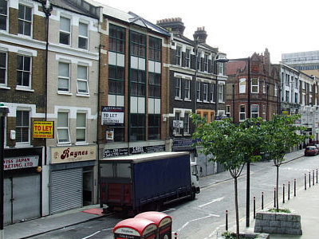
 Stephen Carter – “Camera is on a high
vantage point, looking S down
Stephen Carter – “Camera is on a high
vantage point, looking S down
(Identified Stephen Carter, July 2007)

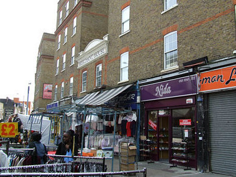
(Identified Stephen Carter, July 2007)

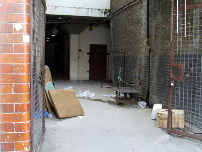
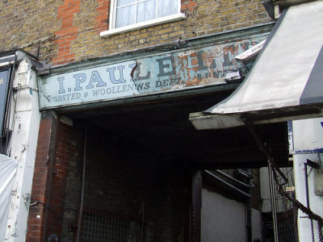

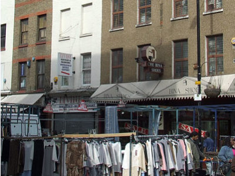
Cheshire Street, E2 -Peter Wray (Alan Baulch) runs across a railway footbridge and down some stairs into a street after stealing a purse in the market. He runs straight into the path of Commander Gideon’s (John Gregson) police car. Gideon gets out to see if the boy is in one piece, but he runs away.

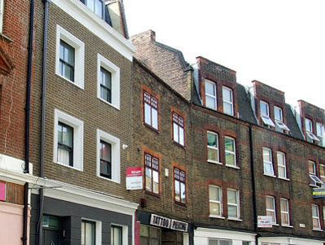

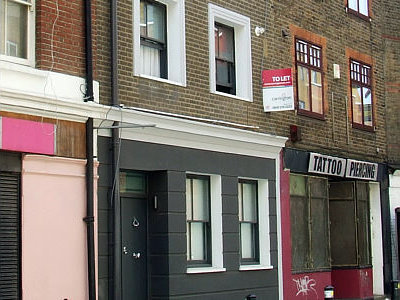


Three Colts Corner, E2 (leading to footbridge, now closed).
The
location of the footbridge Peter Wray runs over before running into the
path of Gideon's car. This alleyway runs alongside the cafe on
(Identified Stephen
Carter, July 2007)


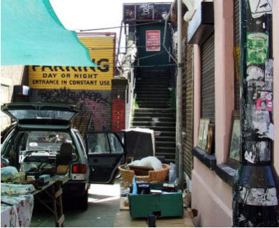
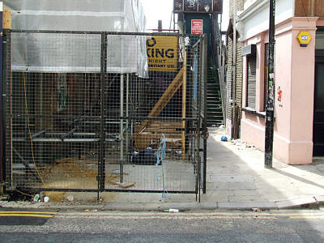
Commercial
Street, E1 –Commander Gideon drives to the

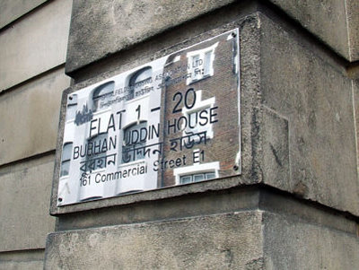

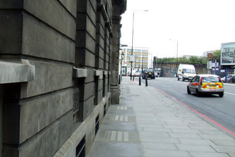

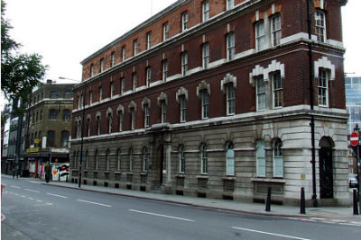
Unknown 3– It’s Sunday and after church Commander Gideon relaxes with his family.

Brick Lane, E1– Commander Gideon (John Gregson) and Inspector David Keen (Alexander Davion) arrive at Cowan’s shop looking for ‘Happy’. Later Gideon and Hemmingway are driven in Gideon’s car round to the Gowan’s shop

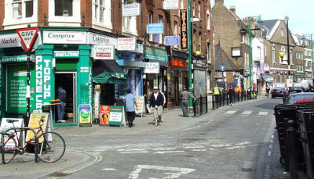

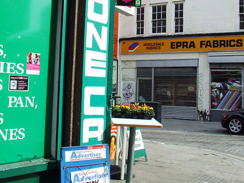
 Inderson and Co. –
Inderson and Co. –
Unknown 4– “Happy” Roden (Jack MacGowran) is chased down the alley behind Cowan’s shop

Unknown 5 – Police car ZB4 arrives at the Stone Warehouse looking for “Happy”.
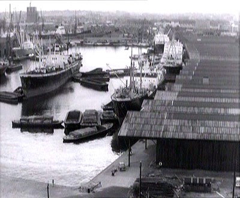
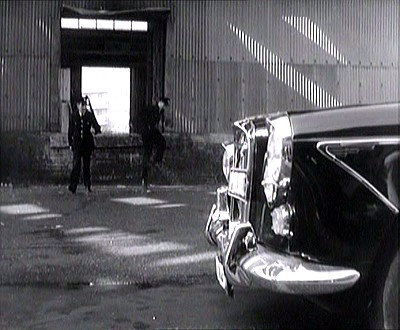
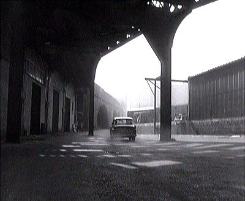
The British
Flag,

Unknown 6 – A Police constable asks a shopkeeper if they have seen ‘Happy’ Roden.

 I’m
assuming the ‘Christ’s’ referred to here is Christ’s Hospital.
I’m
assuming the ‘Christ’s’ referred to here is Christ’s Hospital.
Unknown 7 – The search for ‘Happy’ Roden continues door to door.
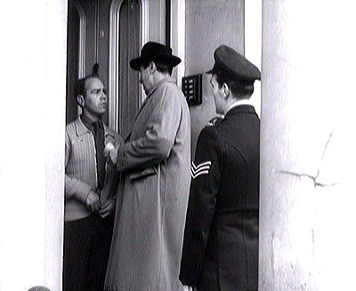
Unknown 8 – David Keen (Alexander Davion) arrives at one possible hiding spot for “Happy” Roden and leaps from his police car into the building.
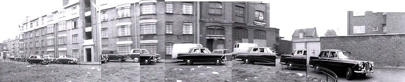
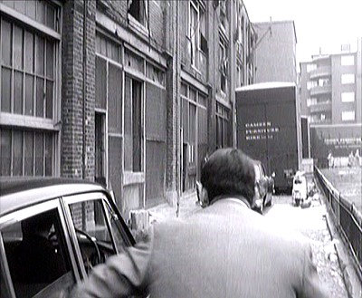
Frostic Place, E1 (now
Frostic Walk, much redeveloped)– A Police woman (Diane
Elliott) spots Peter Wray (Alan Baulch) in the market and follows him home, number
(Identified Stephen Carter, August 2007)

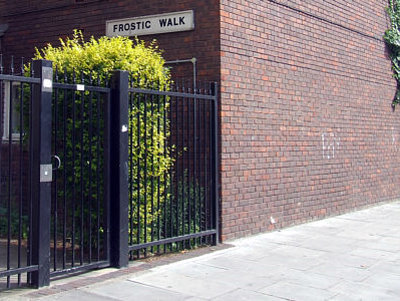
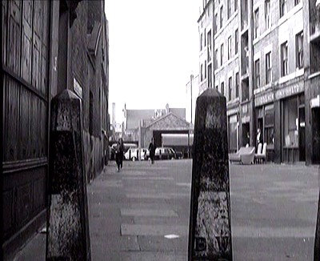
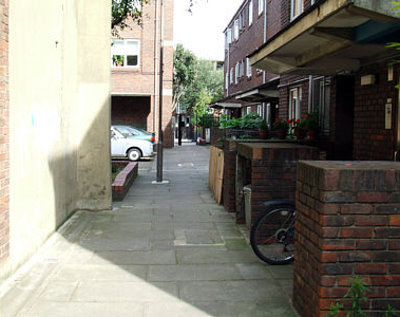
Old
(Identified Stephen Carter, August 2007)

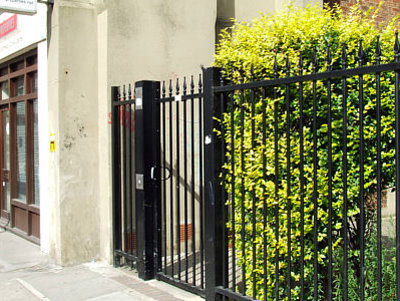

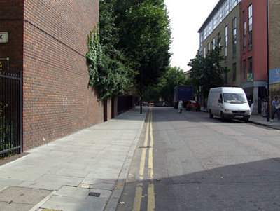

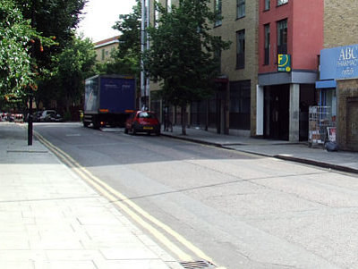

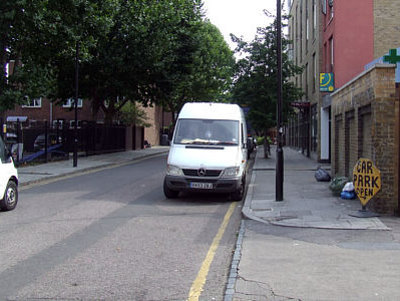
Unknown 9 – Peter Wray (Alan Baulch) makes his way home, but does not know he has been followed. Later that night Commander Gideon pays the Wray’s a visit.

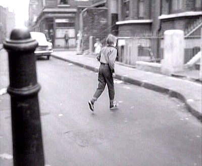

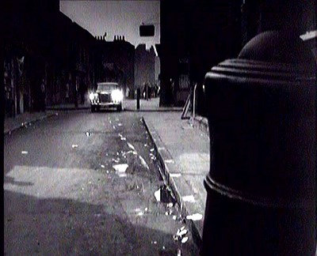
Unknown 10 –
“Happy” Roden
(Jack MacGowran)
is cornered by Inspector David Keen (Alexander Davion) in Frisky Lee’s old shoe
warehouse in


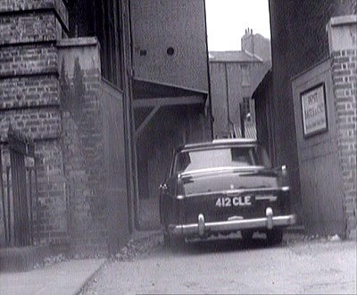


Unknown 11 – Gideon and Hemmingway are driven in Gideon’s car round to the Gowan’s shop.

 Ian S.
Bolton – “possibly
Ian S.
Bolton – “possibly
 Could be connected to Unknown 5.
Could be connected to Unknown 5.
Think you know a spot? Need a bigger image? Email me.
< Previous | Index | Avengerland | Next >
Copyright © 2003 Anthony R. McKay